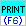
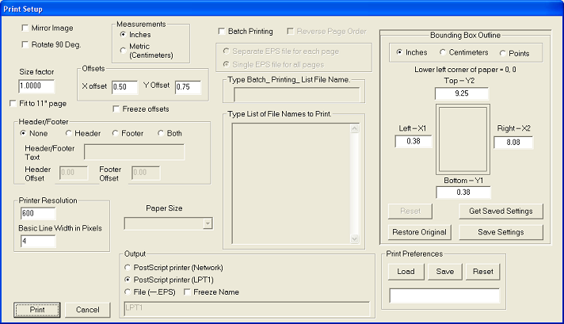

The Print menu (type PR)

PostScript printer (Network)
If this is checked output will be to a network printer. The location and printer name should appear in the box below. The information will typically appear as follows:
This data can be preset in the \winscore\scorlib\pref.dat file.
Information on setting up network names is available on several Google sites.
PostScript printer (LPT1)
Use this option with older (LPT1) connections. It is easy to convert this to network use. See Microsoft Documentation or http://geekswithblogs.net/dtotzke/articles/26204.aspx
File (--EPS)
If this is checked, the name of your current .MUS page (but with the extension changed to .EPS) will appear in the box below. You may change this to any name you want. The EPS file may be viewed in Ghostview or Photoshop and printed to any printer or converted to the PDF format.
Batch Printing
If Batch Printing is checked you must provide a list of input files. You may type in this list or create an external file to be read in, the format is the same for either case. If you wish to print, for example, files SONATA01.MUS through SONATA10.MUS, then you should type into the lower box: SONATA01.MUS 10. For varied names, use additional lines (a number must follow each entry) -- for example:
FRONTPAGE.MUS 1
SONATA01.MUS 10
BACKPAGE.MUS 1
If you wish the output to go to an EPS file, you must check the "File" button near the bottom of the dialog box. If you have checked the "Single EPS" button (near the top/middle), all of your input pages will be contained in a single EPS file with the name given under the "File" button. However, if you have checked the "Separate EPS ...." button, a separate EPS file will be created from each of your input files. The names of these files will be the same as the input names, but with the .EPS extension.
It is a good idea to include complete path names preceding the file names.
If you create a single EPS file which contains several pages, WinScore sets a new Bounding Box for each page. However, if you open this file with Ghostview (and perhaps other programs) the Bounding Box of the first page is applied to all pages. This can be a problem in some publishing situations. The solution is to create a separate EPS file for each page.